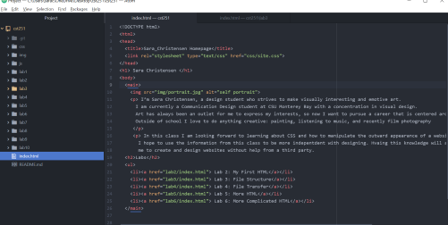
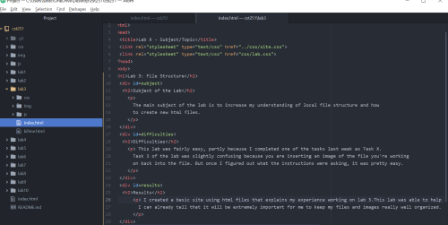

The main subject of the lab is to increase my understanding of local file structure and how to create new html files.
This lab was fairly easy, partly because I completed one of the tasks last week as Task X. Task 3 of the lab was slightly confusing because you are inserting an image of the file you're working on back into the file. But once I figured out what the instructions were asking, it was pretty easy.
I created a basic site using html files that explains my experience working on lab 3.This lab was able to help me understand a slightly more complex version of what we have been doing. I can already tell that it will be extremely important for me to keep my files and images really well organized.
This is an image of the new lab folders I created that contain html files.  